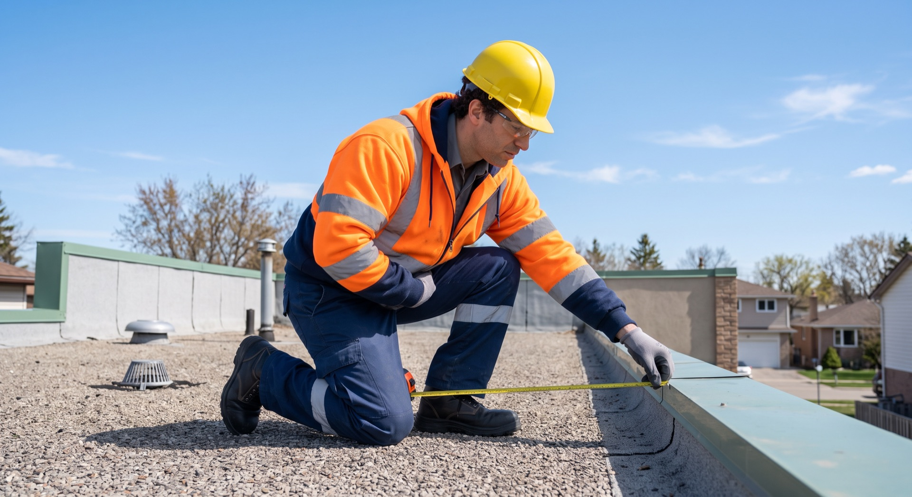
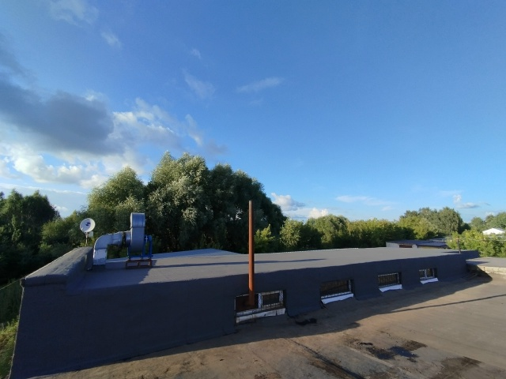

← На главнуюПро кровлю —
Журнал
Про кровлю —
по делу
Заметки мастера KROEM116 из сообщества ВКонтакте: какой материал выбрать, когда делать ремонт, из чего складывается цена и почему кровля течёт раньше срока.

Лучшая кровля для гаража: что выбрать
Профнастил, металлочерепица, наплавляемая рулонная, мягкая черепица и ондулин — что подходит гаражу и почему.

Линокром РЕМ ТКП — стоит ли использовать
Разбор материала ТехноНИКОЛя по опыту работы: как ложится, вес, размер рулона, цена и единственный минус.

Цены на ремонт мягкой кровли гаража в Казани в 2024 году
Стоимость за м² по пяти материалам и готовый расчёт для стандартного гаража 30 м².

Когда лучше делать ремонт наплавляемой кровли
Зима, весна, лето, осень — плюсы и минусы каждого сезона для наплавляемой кровли.

Ремонт мягкой кровли магазина
Почему кровля магазина на первом этаже жилого дома течёт раньше срока и что с этим делать.

Капитальный ремонт кровли
Осмотр несущей конструкции, смета, деление крыши на участки и состав кровельного пирога.